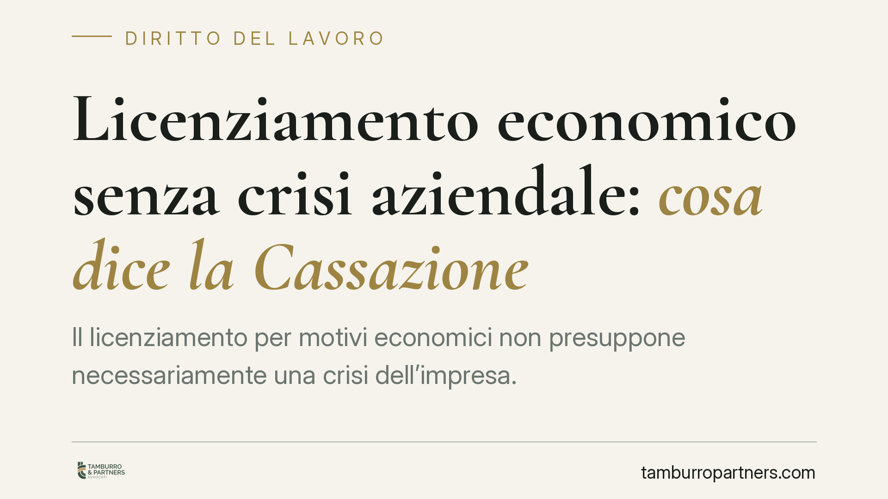

Licenziamento economico senza crisi aziendale: cosa dice la Cassazione
Il licenziamento per motivi economici non presuppone necessariamente una crisi dell'impresa. Lo ribadisce la Cassazione: bastano ragioni organizzative effettive e verificabili, unite al rispetto dell'obbligo di ricollocamento del lavoratore. Una distinzione decisiva per datori e dipendenti, perché sposta il baricentro del giudizio dalla salute dei conti alla concretezza delle scelte gestionali.

Il principio ribadito dalla Corte
La Sezione Lavoro della Cassazione torna su un tema ricorrente nel contenzioso d'impresa: quando è legittimo licenziare per ragioni economiche?
La risposta consolidata è chiara. Il cosiddetto "licenziamento economico" — tecnicamente licenziamento per giustificato motivo oggettivo — non richiede che l'azienda versi in una situazione di crisi o di dissesto. È sufficiente che il recesso sia sorretto da un'esigenza organizzativa reale, effettiva e dimostrabile.
In altre parole, l'imprenditore può decidere di riorganizzare l'attività, esternalizzare una funzione o sopprimere una posizione anche in assenza di perdite. Ciò che conta è che la scelta non sia un pretesto per allontanare un singolo lavoratore.
Inquadramento normativo
Il riferimento è l'articolo 3 della legge n. 604 del 1966, che definisce il giustificato motivo oggettivo come quello legato a "ragioni inerenti all'attività produttiva, all'organizzazione del lavoro e al regolare funzionamento di essa".
La norma non menziona la crisi. La giurisprudenza ha progressivamente confermato che l'ambito è più ampio: rientra qualsiasi modifica organizzativa non arbitraria. Il giudice, peraltro, non può sindacare l'opportunità o la convenienza delle scelte imprenditoriali — tutelate dall'articolo 41 della Costituzione — ma solo verificarne l'esistenza effettiva e il nesso causale con il licenziamento.
A questo si affianca l'onere della prova. Grava sul datore di lavoro dimostrare sia la ragione organizzativa, sia l'impossibilità di ricollocare il dipendente altrove. È il cosiddetto obbligo di repêchage: prima di licenziare, l'impresa deve verificare se esistono altre mansioni compatibili — anche inferiori — in cui reimpiegare il lavoratore.
Cosa cambia in concreto
Per il datore di lavoro il messaggio è duplice. Da un lato, non serve attendere il rosso di bilancio per intervenire sull'organizzazione. Dall'altro, la libertà di riorganizzare non è un salvacondotto: la ragione addotta deve essere autentica e documentata.
Un licenziamento formalmente motivato da "esigenze organizzative", ma seguito dall'assunzione di un altro dipendente per le stesse mansioni, rischia di essere dichiarato illegittimo. Così come il mancato tentativo di ricollocamento espone al medesimo esito, a prescindere dalla bontà della ragione economica.
Per il lavoratore, la difesa si gioca su due fronti. Primo: la reale esistenza della ragione organizzativa. Secondo: il rispetto dell'obbligo di repêchage. Contestare che l'azienda non ha verificato posizioni alternative disponibili è spesso la strada più efficace, perché è il datore a dover provare l'impossibilità del ricollocamento, non il dipendente a dover indicare il posto libero.
Le conseguenze in caso di illegittimità variano secondo la data di assunzione e il regime applicabile — tutele crescenti o articolo 18 dello Statuto — e possono andare dalla reintegrazione all'indennità risarcitoria.
Cosa fare in concreto
Se sei un datore di lavoro:
- Documenta per iscritto la ragione organizzativa: delibera, riorganigramma, dati sulla soppressione della funzione.
- Verifica e formalizza il tentativo di ricollocamento su tutte le posizioni compatibili, prima di procedere al recesso.
- Evita nuove assunzioni sulle stesse mansioni nei mesi successivi al licenziamento.
Se sei un lavoratore:
- Richiedi e conserva la lettera di licenziamento con l'indicazione precisa dei motivi.
- Valuta se l'azienda ha realmente soppresso la tua posizione o l'ha ridistribuita ad altri.
- Rispetta i termini di impugnazione: 60 giorni per la contestazione stragiudiziale e 180 giorni per il deposito del ricorso.
In entrambi i casi consigliamo una verifica preventiva della documentazione: la legittimità del recesso si costruisce — o si contesta — sui fatti provati, non sulle formule usate nella lettera.
Un equilibrio tra libertà d'impresa e tutela del posto
La posizione della Cassazione conferma un punto di equilibrio ormai stabile. L'imprenditore resta libero di organizzare l'attività come ritiene, ma questa libertà incontra due limiti: la verità della ragione addotta e l'obbligo di esaurire ogni alternativa al licenziamento. È in questo spazio che si decide, caso per caso, la legittimità del recesso.
Disclaimer
Contributo informativo a cura di Tamburro & Partners - Avv. Giuseppe Tamburro. Non costituisce parere legale.
Ogni storia di lavoro ha i suoi tempi.
Se gestisci HR e vuoi un confronto su contenzioso, ispezioni o licenziamenti, scrivi allo studio. Ti rispondiamo entro un giorno lavorativo.